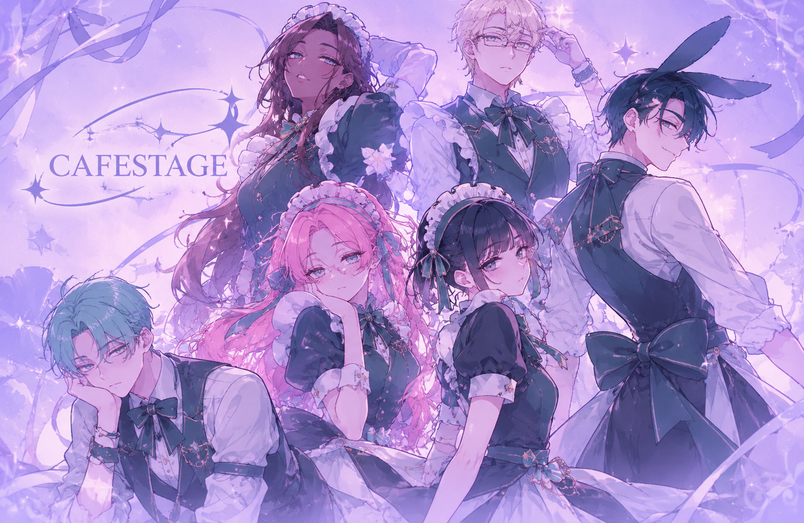

WELCOME TO
Cafestage

A little universe beyond the stage.
 ENTER CAFÉ
ENTER CAFÉ
Beyond the Stage
Welcome to Cafestage, a little place where music, dreams, and cosmic wonders meet.
Inspired by the animated music project Alien Stage by VIVINOS, Cafestage is a fan-made alternate universe where our beloved characters can finally escape the pressure of the stage and enjoy an ordinary day together.
Here, the characters can relax, share delicious alien-inspired drinks and snacks, and spend their time in a cozy café.
And while waiting for your orders, you can enjoy a little trivia prepared especially for you.
Take a break from the spotlight. Your story continues here.